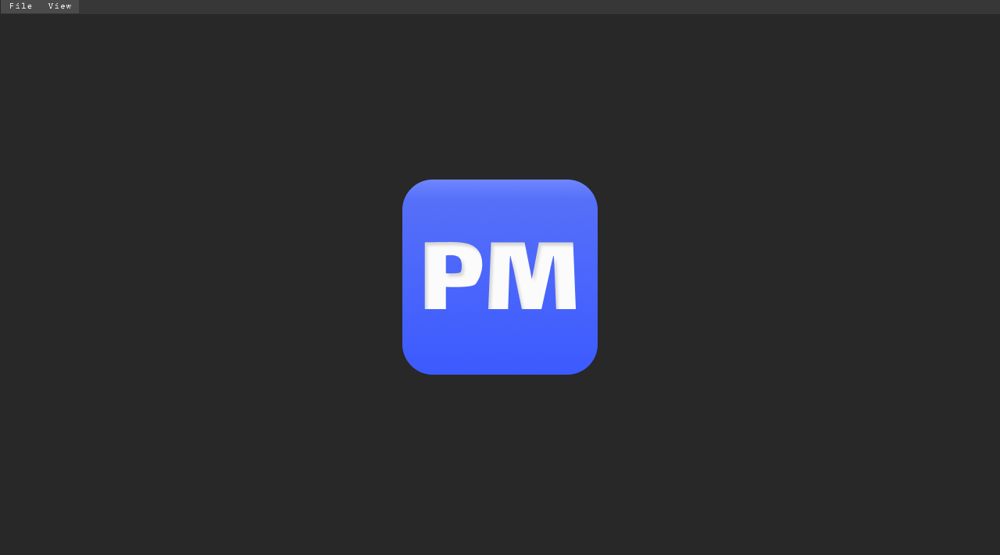
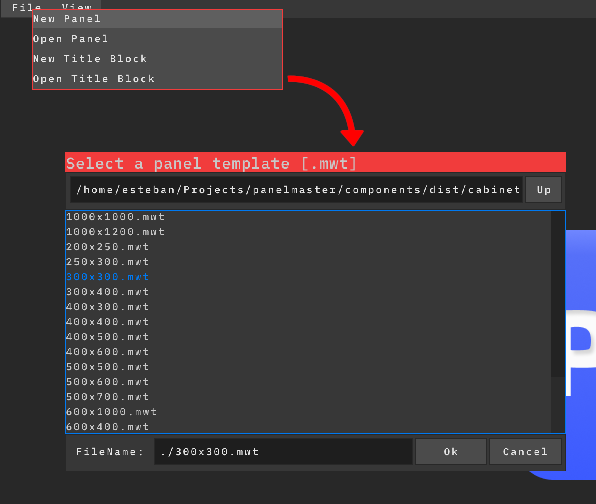
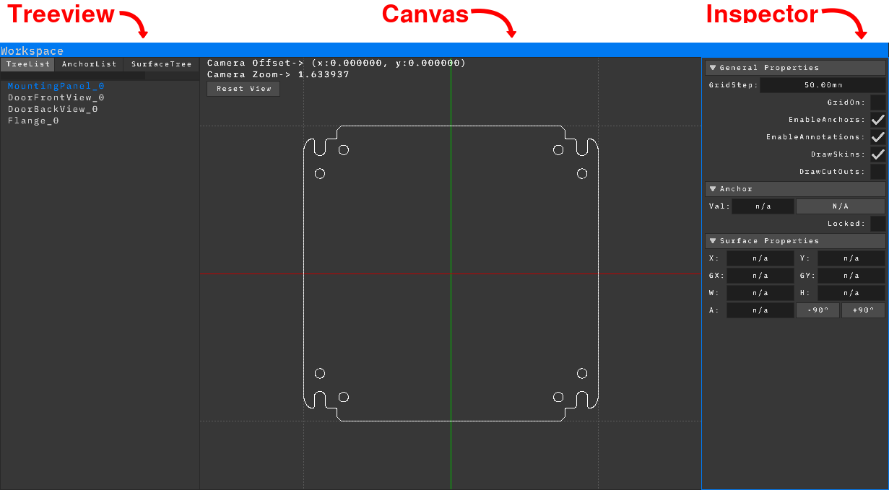
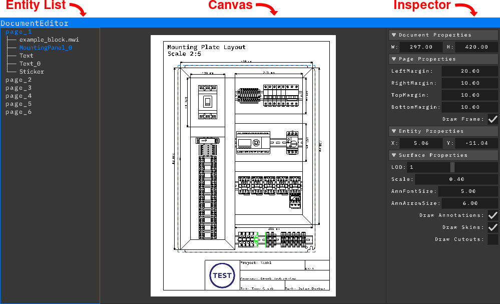
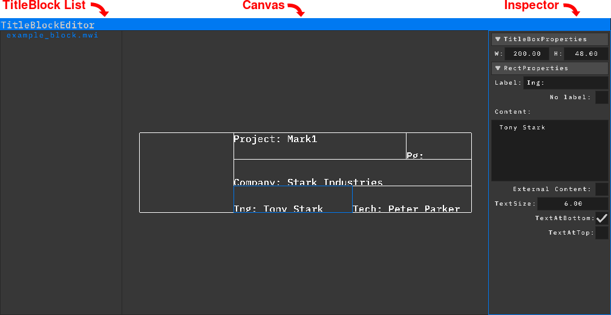

PanelMaster es una aplicación CAD de código abierto, portable, ligera y
con un conjunto completo de funcionalidades para el diseño de layouts de
paneles de control eléctrico, enfocada en la iteración rápida y en obtener
resultados visuales de alta calidad.
Para empezar rápidamente, mira este breve video que explica los conceptos básicos de forma práctica y te muestra cómo diseñar un panel de control eléctrico en tan solo 5 minutos.
Introducción
Bienvenido a PanelMaster! Esta es la pantalla inicial que aparece al iniciar el software:

Para crear tu primer panel, selecciona File > New Panel
y elige el template para tu enclosure mediante el diálogo de archivos:
Los templates de enclosure utilizan el formato .mwt. Estos
especifican las dimensiones físicas del cabinet y sus mounting surfaces
internas (como backpanels o doors) donde se pueden colocar componentes.
Los templates incluidos se encuentran en components/cabinets.

Si el archivo es válido, el Workspace se abrirá con el cabinet dentro.
El Workspace puede abrirse o cerrarse en cualquier momento desde el menú
View, como cualquier otra ventana, o presionando
Esc mientras el cursor está sobre él.
Si el archivo es inválido o está corrupto, aparecerá un mensaje de error
en la esquina inferior izquierda.

El Workspace está dividido en tres áreas principales: el Treeview, el Canvas
y el Inspector.
Treeview: Muestra las entidades que conforman el enclosure
que se está editando. Contiene cuatro pestañas intercambiables:
TreeList: Muestra las base surfaces disponibles
para colocar componentes, de acuerdo con el template seleccionado.
AnchorList: Muestra los anchors y sus constraints
presentes en la base surface activa (los anchors se explican más adelante).
SurfaceTree: Muestra la jerarquía de surfaces o
componentes colocados sobre la base surface seleccionada.
Annotations: Muestra las annotations y dimensiones
presentes en la base surface activa.
Canvas: El área de trabajo principal, donde puedes seleccionar
y mover surfaces y anchors. Usa la rueda del mouse para hacer zoom, mantenla
presionada para hacer pan y haz clic en el botón Reset View
en la esquina superior izquierda en cualquier momento para restablecer la
cámara a (0,0).
Inspector: Muestra y permite modificar las propiedades de
las surfaces o anchors seleccionados, así como las propiedades generales
del Workspace.
Conceptos básicos de Surfaces
Las surfaces son los componentes principales que conforman un enclosure en
PanelMaster y se almacenan como archivos .mwc.
Están estructuradas jerárquicamente: cuando mueves o rotas una parent surface,
todas sus child surfaces la siguen automáticamente, lo que facilita reposicionar
bloques completos de componentes de una sola vez.
NUEVO · VBETA1.1.0 :
Para añadir rápidamente una surface, abre la pestaña Components en la barra lateral derecha.
La biblioteca de componentes está organizada en categorías. Busca el componente deseado, haz clic sobre él
y mantén presionado el botón del ratón mientras lo mueves hasta la surface que será su parent.
Suelta el botón del ratón para colocarlo.
Cuando el parent es una base surface o una extensible surface, el nuevo componente se colocará
en la posición del ratón. Cuando el parent es otro componente, el nuevo componente se posicionará
automáticamente a su derecha.
Para agregar una surface, haz clic derecho sobre la parent surface deseada
y selecciona Add Child Surface. Luego selecciona el archivo
.mwc mediante el diálogo de archivos.
Los archivos de surface incluidos se encuentran en components/.
Para mover una surface en el Canvas, haz clic y arrástrala. Desde el Inspector
puedes consultar tanto su posición global como su posición relativa respecto
a su parent, además de ajustar su rotación.
Para eliminar una surface y sus children, haz clic derecho sobre ella y
selecciona Delete Surface.
Para duplicar una surface, haz clic derecho sobre ella y selecciona
Duplicate Surface. Luego introduce el número de copias
deseado. Cada nueva copia se establecerá como child de la anterior,
creando una jerarquía anidada.
Para alinear una surface y sus children, haz clic derecho sobre ella y
selecciona Align Children. Luego elige una de las siguientes
opciones de alineación:
Align Ahead: Alinea únicamente las child surfaces
inmediatas hacia adelante.
Align Ahead (Recursive): Alinea todas las child
surfaces hacia adelante, incluyendo los descendants anidados
a mayor profundidad.
Align Behind: Alinea únicamente las child surfaces
inmediatas hacia atrás.
Align Behind (Recursive): Alinea todas las child
surfaces hacia atrás, incluyendo los descendants anidados
a mayor profundidad.
Luego introduce la distancia de offset para especificar el espacio entre
cada elemento alineado.
Para aplanar una jerarquía de surfaces, haz clic derecho sobre la parent
surface, selecciona Flat Surface y elige una de las
siguientes operaciones:
Flat from Father: Mueve las child surfaces inmediatas
al mismo nivel jerárquico que la parent. Las child surfaces mantienen
intactos sus propios descendants.
Flat from Father (Recursive): Mueve la surface y
todos sus descendants al mismo nivel jerárquico que la parent.
Flat Children: Promueve todos los descendants anidados
para convertirlos en children directos de la parent surface seleccionada,
creando una jerarquía de children de un solo nivel.
Para cambiar el orden de visualización de las surfaces, haz clic derecho
sobre la surface objetivo y selecciona Shift Surface Up
o Shift Surface Down.
Para cambiar el parent de una surface, selecciona la child surface con
clic izquierdo. Luego mantén presionado Left Shift y haz
clic izquierdo sobre la surface que será la nueva parent. Haz clic derecho
sobre cualquiera de las surfaces seleccionadas y selecciona
Reparent Surface. Luego elige una de las siguientes
opciones de posicionamiento:
Keep Current Position: Mantiene la surface a la
que se le cambia el parent en sus coordenadas espaciales actuales.
Center in New Parent: Mueve la surface directamente
al origen local (0,0) de su nueva parent surface.
NEW · VBETA1.3.0 :
Ahora es posible añadir labels a los componentes, las cuales se dibujan
junto al componente. Su posición relativa al componente y su orientación
pueden modificarse mediante las opciones del panel lateral.
Ahora es posible modificar las dimensiones de los componentes directamente
desde el panel lateral. Las dimensiones originales pueden restaurarse en
cualquier momento mediante la opción correspondiente.
Ahora es posible añadir componentes genéricos a una surface. Sus dimensiones
de boundary y cutout, color y offset pueden personalizarse mediante las opciones
del panel lateral.
Anchors
Los anchors son la base paramétrica de PanelMaster. Proporcionan dimensiones
del mundo real (mm), sirven como puntos de referencia para las annotations
en pantalla y controlan el comportamiento de las extensible surfaces.
Los anchors pueden ser horizontales o verticales y pueden tener distintos
tipos de constraints establecidos entre ellos y con las surfaces.
NUEVO · VBETA1.2.0 :
Para añadir un anchor de offset rápidamente, presiona O
para entrar en el modo Offset. Luego, haz clic sobre el anchor que deseas
utilizar como referencia y arrastra el ratón para definir la distancia
deseada. Suelta el botón del ratón para crear el nuevo anchor en la
posición indicada.
Para agregar un anchor, haz clic derecho sobre uno de los cuatro anchors
principales de una base surface y selecciona Add Offset.
Esto crea un nuevo anchor vinculado al anchor original mediante un offset
constraint. Usa el parámetro Val en el Inspector para
definir la distancia exacta en mm entre el nuevo anchor y el original.
Para mover un anchor en el Canvas, haz clic y arrástralo hasta la posición
deseada. Sin embargo, si un anchor está restringido por un constraint o
ha sido bloqueado por el sistema o por el usuario, no podrá moverse
manualmente.
Para agregar varios anchors a la vez, mantén presionado Left Shift
y haz clic izquierdo para seleccionar más de un anchor principal. Haz clic
derecho y selecciona Add Offset. Selecciona
Multiple en el menú para crear simultáneamente un nuevo
offset anchor para cada anchor de referencia seleccionado.
Para eliminar un anchor, haz clic derecho sobre él y selecciona
Delete Anchor.
Para agregar un center anchor entre dos anchors paralelos, selecciona el
primer anchor con clic izquierdo. Luego mantén presionado
Left Shift y haz clic izquierdo sobre el segundo anchor
paralelo. Haz clic derecho sobre cualquiera de los anchors seleccionados
y selecciona Add Center. Esto crea un nuevo anchor
restringido directamente al punto medio entre los dos anchors de referencia.
Para reflejar un anchor respecto a un anchor de referencia, selecciona
el anchor objetivo con clic izquierdo. Luego mantén presionado
Left Shift y haz clic izquierdo sobre el segundo anchor
que servirá como eje. Haz clic derecho sobre cualquiera de los anchors
y selecciona Add Mirror. Esto crea un nuevo anchor
restringido simétricamente en el lado opuesto al primer anchor con
respecto a la referencia seleccionada.
Para liberar un anchor de su constraint, haz clic derecho sobre el anchor
y selecciona Free Constraint.
Extensible Surfaces
Las extensible surfaces son surfaces especializadas capaces de cambiar
dinámicamente de tamaño, como los cable ducts o DIN rails. A diferencia de
las surfaces estándar, ignoran las configuraciones de posición jerárquicas
y responden exclusivamente a los anchor constraints. A pesar de este
comportamiento de posicionamiento paramétrico, las extensible surfaces
mantienen las capacidades estándar de parenting: pueden tener otras surfaces
como parent y las child surfaces pueden tenerlas como parent.
NUEVO · VBETA1.1.0 :
Para añadir rápidamente un extensible surface, abre la pestaña Extensibles
en la barra lateral derecha, donde se muestran los extensible surfaces disponibles.
Haz clic en el extensible surface deseado para seleccionarlo y entrar en el modo Extensible Draw.
Luego, haz clic y arrastra en el Workspace Canvas para definir la trayectoria deseada
del extensible surface.
Si vuelves a hacer clic en el extensible surface seleccionado, lo deseleccionarás
y saldrás del modo Extensible Draw.
El nuevo extensible surface se posicionará entre los anchors compatibles más cercanos
a lo largo de la trayectoria dibujada. Si no se encuentran anchors adecuados,
se mostrará un mensaje de error y se saldrá del modo Extensible Draw.
Para crear anchors automáticamente cuando no se encuentren anchors adecuados,
activa la casilla Create Anchors. En este caso, se crearán nuevos
anchors en las posiciones necesarias en lugar de mostrar un error.
NUEVO · VBETA1.2.0 :
Al dibujar una superficie extensible, si se traza un recorrido rectangular,
se crea automáticamente un marco utilizando la extensible surface
seleccionada, con cortes a 45 grados en cada esquina. Al igual que con las
extensible surfaces normales, se utilizarán los anchors existentes
siempre que se encuentren anchors compatibles. De lo contrario, se mostrará
un error, a menos que la opción Create Anchors esté activada,
en cuyo caso se crearán automáticamente los anchors necesarios.
Ahora es más fácil realizar cortes a 45 grados en extensible surfaces gracias
a los nuevos botones de corte, que permiten aplicar rápidamente el corte deseado
sin tener que introducir manualmente sus dimensiones. Los campos
LCut y RCut siguen disponibles para especificar
medidas de corte personalizadas cuando sea necesario.
Para agregar una extensible surface, selecciona tres anchors de referencia:
dos anchors paralelos y uno perpendicular. Haz clic izquierdo para seleccionar
el primer anchor, luego mantén presionado Left Shift y haz clic izquierdo
sobre los otros dos. Haz clic derecho sobre la parent surface deseada,
selecciona Add Child Surface y elige un archivo de
extensible surface mediante el diálogo de archivos.
Las extensible surfaces también utilizan el formato de archivo
.mwc. Los archivos de extensible surfaces incluidos
se encuentran en components/extensibles.
Para modificar la longitud o posición de una extensible surface, haz clic
y arrastra sus anchors de referencia en el Canvas o ajusta sus valores
de offset desde el Inspector.
Las extensible surfaces también pueden actuar como parent surfaces:
puedes hacer clic derecho sobre una extensible surface y seleccionar
Add Child Surface para hacer que otras surfaces sean
sus children, igual que con las surfaces estándar.
Para controlar el lado de posicionamiento de una extensible surface,
selecciona la surface y modifica el parámetro AxisAlign
en el Inspector. Este parámetro especifica en qué lado del anchor
perpendicular principal se renderiza la surface.
Las extensible surfaces pueden agregarse con un único anchor de referencia
seleccionado. En ese caso, los dos anchors perpendiculares más cercanos,
a cada lado del mouse, se seleccionarán automáticamente. Se recomienda
la selección explícita cuando se trabaja con muchos anchors.
Para modificar los cortes en cada extremo de una extensible surface,
selecciona la surface y ajusta las propiedades LCut y
RCut bajo Anchor Setup en el Inspector. El valor especifica
la distancia en milímetros desde el borde correspondiente donde se realiza
el corte. Los valores positivos y negativos producen cortes en direcciones
opuestas.
Por ejemplo, si la extensible surface tiene un ancho de 25 mm, establecer
el valor del corte en 25 mm produce un corte de 45 grados.
Al agregar una extensible surface con cuatro anchors de referencia
seleccionados, dos horizontales y dos verticales, se crea automáticamente
un frame utilizando la extensible surface seleccionada, aplicando
automáticamente los cortes de las esquinas.
Annotations
Las annotations son el elemento utilizado en PanelMaster para visualizar
las dimensiones entre dos anchors.
Son puramente visuales y no modifican las dimensiones reales.
Para establecer una dimensión exacta, modifica en su lugar el valor del
anchor correspondiente.
Para agregar una annotation, selecciona dos anchors: haz clic izquierdo
sobre el primer anchor, luego mantén presionado Left Shift y haz clic
izquierdo sobre el segundo. Haz clic derecho sobre cualquiera de los
anchors seleccionados y selecciona Add Annotation.
La annotation aparecerá entre los dos anchors en la posición del mouse.
Para mover una annotation, simplemente arrástrala con el mouse.
Para eliminar una annotation, haz clic derecho sobre ella y selecciona
Delete Annotation.
Para agregar extension lines a una annotation, mantén presionado Left Shift
y haz clic sobre la annotation, luego mueve el mouse hasta la posición deseada.
Para eliminar las extension lines de una annotation, haz clic derecho
sobre la annotation y selecciona Disable Extension Lines.
Para cambiar el lado en el que se muestra el texto de la annotation,
haz clic derecho sobre la annotation y selecciona Flip Side.
Para ocultar una annotation, haz clic derecho sobre ella y selecciona
Hide/Show Annotation. Para mostrarla nuevamente, haz clic
derecho sobre la annotation desde la sección Annotations del TreeView
y selecciona nuevamente Hide/Show Annotation.
Más funciones de Surface/Anchor
Hay varias funciones disponibles para permitir que las surfaces y anchors
interactúen de formas más complejas, principalmente pensadas para manejar
layouts de doors y configuraciones similares.
Al agregar un anchor, su posición puede bloquearse para evitar cambios
accidentales seleccionando el anchor y activando el checkbox
Locked bajo la sección Anchors del Inspector.
El movimiento de una surface puede restringirse a lo largo de cualquiera
de los ejes activando Fixed Local X o
Fixed Local Y bajo la sección Surface Properties del
Inspector. Al agregar una child surface a una extensible surface, su
eje local Y queda bloqueado por defecto para simular el comportamiento
de un componente que se desliza a lo largo de un rail.
De forma similar a las annotations, los anchors y surfaces, incluyendo
sus descendants, pueden ocultarse y mostrarse tanto desde el Canvas
como desde el TreeView.
Para establecer un anchor existente como el offset de otro anchor, haz
clic izquierdo sobre el anchor que se utilizará como offset. Luego mantén
presionado Left Shift y haz clic izquierdo sobre el anchor
que utilizará el offset. Haz clic derecho sobre cualquiera de los anchors
y selecciona Set as Offset.
Para establecer un anchor existente como el centro entre otros dos anchors,
haz clic izquierdo sobre el anchor que se utilizará como centro. Luego
mantén presionado Left Shift y haz clic izquierdo sobre
los dos anchors exteriores. Haz clic derecho sobre cualquiera de los tres
anchors y selecciona Set as Center.
Para establecer un anchor existente como el mirror de otro anchor, haz
clic izquierdo sobre el anchor que se utilizará como mirror. Luego mantén
presionado Left Shift y haz clic izquierdo sobre el anchor
que será reflejado, seguido del anchor que se utilizará como eje. Haz clic
derecho sobre cualquiera de los tres anchors y selecciona
Set as Mirror.
Para crear layouts precisos, una surface puede fijarse a uno o dos anchors.
Selecciona la surface y el anchor, haz clic derecho sobre la surface y
selecciona Fix to Anchor. Esto puede repetirse con un
anchor sobre el eje opuesto para posicionar la surface en la intersección
de los dos anchors.
Para liberar una surface de uno o más anchors, haz clic derecho sobre la
surface y selecciona Free From Anchor. Si la surface está
fijada a múltiples anchors, selecciona si deseas eliminar el constraint
Vertical u Horizontal.
Los anchors también pueden alinearse con surfaces. Selecciona la surface
y el anchor, haz clic derecho sobre el anchor y selecciona
Fix to Surface. Una vez fijado, el valor del anchor puede
ajustarse para establecer un offset relativo a la posición de la surface,
o el anchor puede bloquearse para evitar movimientos accidentales.
Para liberar un anchor de su surface constraint, haz clic derecho sobre
el anchor y selecciona Free Constraint.
Combinadas con los diferentes anchor constraints, estas funciones
permiten crear layouts de componentes sorprendentemente complejos,
responsivos, simétricos y completamente paramétricos.
Los componentes destinados al montaje en doors incluyen sus dimensiones
de cutout. Para mostrarlas, activa o desactiva DrawCutOuts bajo General
Properties en el Inspector. La opción DrawSkins en la misma sección
puede desactivarse para ocultar el componente cuando estorbe.
Al hacer clic derecho sobre un componente aparecen las opciones
Create Boundary Anchors y Create CutOut Anchors,
que crean automáticamente anchors en las dimensiones máximas y de cutout
del componente. Estos anchors pueden utilizarse posteriormente para
posicionamiento del layout o annotations.
Los Boundary Anchors son especialmente útiles para componentes
extensibles, por ejemplo, para posicionar rails entre cable ducts.
Para activar una surface como Ghost Reference, mantén
presionado Left Shift y haz clic izquierdo sobre una base surface diferente
en la pestaña TreeList del TreeView.
La surface se mostrará como una referencia semitransparente debajo de la
surface actualmente seleccionada. Mantener presionado Left Shift y hacer
clic izquierdo nuevamente sobre el ghost activo lo desactivará.
Al hacer clic derecho sobre la ghost surface en la pestaña
TreeList del TreeView aparecen opciones
para voltear el ghost a lo largo del eje X o Y. Esto puede utilizarse
para representar con precisión la parte posterior de una door al verla
desde el frente, como si se observara mediante una radiografía.
Las projections se utilizan para transferir medidas de una base surface
a otra. Permiten que un anchor de una surface coincida continuamente
con el valor de un anchor de otra surface diferente. Para establecer un
projection constraint, primero establece un Ghost Reference
para la surface desde la cual se tomará la projection. Luego selecciona
el anchor que se utilizará como projection en esa surface. Regresa a la
target surface y selecciona el anchor que recibirá la projection.
Finalmente, haz clic derecho y selecciona Set as Projection
o Set as Inverted Projection (si el ghost está volteado).
Para liberar un anchor de su projection constraint, haz clic derecho sobre
el anchor y selecciona Free Constraint.
Extras
El panel completo puede reemplazarse de una sola vez mientras se ajustan
automáticamente la mayoría de las dimensiones. Ve a
File > Change Panel y selecciona cualquier panel.
Si el panel de reemplazo tiene menos base surfaces que el original, esas
surfaces y sus contenidos serán eliminados, y cualquier anchor constraint
que haga referencia a un anchor perteneciente a una surface eliminada
también será liberado.
Documents
Los Documents son las estructuras utilizadas por PanelMaster para generar
documentación técnica. Cada proyecto contiene un único document, que se
edita mediante el Document Editor, accesible desde View > Document Editor.
El document se almacena como parte del proyecto y no requiere un archivo
separado. Una vez completado, puede exportarse como PDF para visualizarlo,
imprimirlo o compartirlo.
Los Documents están compuestos por pages. Todas las pages de un document
comparten el mismo tamaño, definido en milímetros y establecido por defecto
en A4 horizontal (420W × 297H). Cada page puede activar o desactivar
independientemente su frame y ajustar sus frame margins, que también se
definen en milímetros.
Cada page también tiene su propia lista de entities. Las entities son los
elementos que pueden agregarse a una page, cada una con su propia posición
dentro de la page. Además, cada tipo de entity tiene su propio conjunto de
propiedades editables, que pueden configurarse directamente desde el
Document Editor. Actualmente, PanelMaster admite los siguientes tipos de
entities:
Surfaces: Superficies de panel que pueden mostrarse como parte del document.
Text: Elementos de texto que pueden colocarse en la page.
Stickers: Elementos de imagen que pueden colocarse en la page. Actualmente no se admite transparencia.
Title Blocks: Se explican más adelante.
Document Editor
El Document Editor puede abrirse en cualquier momento desde View >
Document Editor. Está dividido en tres áreas principales: el Entity List,
el Canvas y el Inspector.
Entity List: Muestra las pages contenidas en el document,
así como las entities pertenecientes a cada page.
Canvas: Muestra la page actualmente seleccionada,
donde sus entities pueden seleccionarse y moverse.
Inspector: Muestra y permite modificar las propiedades
de la entity seleccionada en la page actual.

Uso:
Al crear un proyecto nuevo, el document no contiene pages por defecto.
Para crear una page, haz clic derecho en el Entity List y selecciona New Page.
Para modificar el tamaño de la page, utiliza los parámetros W y H bajo
la sección Document Properties del Inspector.
Para agregar un frame a la page, activa Draw Frame bajo la sección
Page Properties del Inspector. Una vez activado, los parámetros
LeftMargin, RightMargin, TopMargin y BottomMargin estarán disponibles
en la misma sección y pueden utilizarse para ajustar los márgenes de
cada lado del frame.
Para agregar una surface a una page, haz clic derecho en el Entity List
y selecciona Add Surface.
Para mover una Surface entity, haz clic y arrástrala en el Canvas.
Para modificar una Surface entity, selecciónala desde el Entity List
o el Canvas. Las siguientes opciones están disponibles bajo la sección
Surface Properties del Inspector:
Scale: Cambia el tamaño de la surface en la page.
LOD: Controla el nivel de detalle utilizado para
dibujar los componentes sobre la surface. La mayoría de los
componentes tienen disponibles tres niveles de detalle diferentes.
Para surfaces grandes mostradas en pages pequeñas, utilizar
un nivel de detalle inferior puede hacer que el dibujo sea
más limpio y fácil de leer.
AnnFontSize: Cambia el tamaño de fuente de las
annotations mostradas en la surface.
AnnArrowSize: Cambia el tamaño de las flechas
de las annotations.
Draw Annotations: Activa o desactiva las
annotations en la surface.
Draw Skins: Activa o desactiva el dibujo de las
skins de los componentes en la surface. Las extensible surfaces
siguen dibujándose cuando esta opción está desactivada.
Draw Cutouts: Activa o desactiva las áreas de
cutout de los componentes. Cuando está activado, los componentes
con geometría de cutout muestran sus cutouts mediante un patrón
de líneas diagonales.
Para agregar una text entity a una page, haz clic derecho en el Entity List
y selecciona Add Text.
Para mover una Text entity, haz clic y arrástrala en el Canvas.
Para modificar una Text entity, selecciónala desde el Entity List o el
Canvas. Las siguientes opciones están disponibles bajo la sección
Text Properties del Inspector:
Text: Especifica el texto que se mostrará.
Se admite texto multilínea.
Size: Cambia el tamaño del texto.
Left, Center, Right: Alinea el texto multilínea
respecto a la línea más larga.
Actualmente PanelMaster no admite text boxes de tamaño fijo.
Como alternativa, puedes agregar una línea que contenga
únicamente espacios para establecer el ancho deseado.
Las demás líneas se alinearán entonces respecto a esta línea.
R, G, B: Controla el color del texto utilizando
valores independientes de rojo, verde y azul.
Para agregar un sticker a una page, haz clic derecho en el Entity List y
selecciona Add Sticker. Luego selecciona un archivo de
imagen válido mediante el diálogo de archivos.
Para mover una Sticker entity, haz clic y arrástrala en el Canvas.
Para modificar una Sticker entity, selecciónala desde el Entity List o
el Canvas. La opción Scale bajo la sección
Sticker Properties del Inspector cambia el tamaño
del sticker en la page.
Para eliminar una entity, haz clic derecho sobre ella en el Entity List
o el Canvas y selecciona Delete Entity.
Para eliminar una page, haz clic derecho en el Entity List y selecciona
Delete Page. Esto elimina la page activa.
Para duplicar una page, haz clic derecho en el Entity List y selecciona
Duplicate Page. Esto crea una copia de la page activa,
incluyendo todas sus entities.
Para cambiar el orden de dibujo de una entity, haz clic derecho sobre ella
en el Entity List y selecciona Shift Up o
Shift Down.
Exportaciones (DXF, SVG)
Para exportar los cutouts de un surface tree como un archivo .dxf,
haz clic derecho sobre la surface deseada en la pestaña TreeList
y selecciona Export Cutouts. Luego se abrirá un diálogo de
archivos para elegir la ubicación de salida.
El archivo exportado contiene dos layers: SURFACE, que
contiene el contorno de la surface, y CUTOUTS, que contiene
la geometría de los cutouts.
El formato DXF y sus layers independientes están destinados a workflows de
fabricación, como el mecanizado o corte láser de la puerta del cabinet.
Para exportar una base surface como archivo .svg, agrégala
como una Surface entity a cualquier page del Document del proyecto.
Luego haz clic derecho sobre la entity y selecciona
Export to SVG.
El SVG exportado conserva los parámetros de visualización de la entity,
como LOD, la configuración de annotations,
Draw Skins y Draw Cutouts, produciendo
un resultado visualmente idéntico a la Surface entity en el Document.
La exportación SVG es útil para importar dibujos en otras aplicaciones con
capacidades de edición de Documents más avanzadas que las que actualmente
ofrece PanelMaster, como Microsoft Word o Inkscape. El rendimiento de SVG
no está altamente optimizado por el momento, por lo que los archivos
exportados pueden ser relativamente pesados.
Title Blocks
Los Title Blocks son los paneles de información que comúnmente se encuentran
en los dibujos técnicos. En PanelMaster son completamente personalizables
y no están limitados a un layout fijo. Pueden crearse con diferentes
divisiones, posiciones y tamaños de texto para adaptarse a las necesidades
de cada document.
Los Title Blocks están divididos en Rects, que pueden contener texto y un
label opcional.
Los Title Blocks pueden guardarse y cargarse para utilizarse en otros proyectos.
Utilizan la extensión de archivo .mwi, lo que permite reutilizar
layouts comunes entre diferentes proyectos. Una vez creados, los Title Blocks
se utilizan como entities en las pages de los Documents.
Title Block Editor
El TitleBlock Editor puede abrirse en cualquier momento desde View >
TitleBlock Editor. Está dividido en tres áreas principales: el TitleBlock List,
el Canvas y el Inspector.

Para crear un nuevo Title Block, haz clic derecho en el TitleBlock List
y selecciona New Title Block, o utiliza
File > New Title Block.
Para guardar un Title Block, haz clic derecho sobre él en el TitleBlock
List y selecciona Save Title Block As, o utiliza
File > Save Title Block As.
Para abrir un Title Block existente, haz clic derecho en el TitleBlock
List y selecciona Open Title Block, o utiliza
File > Open Title Block.
Una vez creado un Title Block, sus dimensiones pueden cambiarse mediante
las opciones W y H bajo la sección
TitleBlock Properties del Inspector.
Para seleccionar un Rect, haz clic izquierdo sobre él. Sus
Rect Properties se mostrarán entonces en el Inspector.
Para dividir un Rect, haz clic derecho sobre él y selecciona
Split Horizontally o Split Vertically,
dependiendo de la dirección deseada. Luego introduce el número de
divisiones en el campo Divisions para especificar en
cuántas secciones debe dividirse el Rect.
Para cambiar el tamaño de un Rect, haz clic y arrastra cualquiera de sus bordes.
Para eliminar un Rect, cambia su tamaño hasta que una de sus dimensiones
llegue a cero, arrastrando uno de sus bordes sobre el borde opuesto.
Cuando se selecciona un Rect, sus parámetros disponibles se muestran bajo
la sección Rect Properties del Inspector:
Label: Especifica el identificador del Rect.
Cada Rect debe tener un label único.
No Label: Oculta el label del Rect. Esto puede ser útil
al colocar un sticker dentro del Rect, cuando el label no se alinea
correctamente o cuando no se necesita un label.
Content: Especifica el contenido mostrado dentro del Rect.
Por defecto, el mismo contenido se utiliza para cada instancia del
Title Block.
External Content: Hace que el contenido del Rect sea
independiente para cada instancia del Title Block dentro de un document.
Cuando está activado, su contenido puede establecerse por separado
desde el Document Editor.
TextSize: Establece el tamaño tanto del contenido del
Rect como de su label.
TextAtBottom: Alinea el texto contra el borde inferior
del Rect.
TextAtTop: Alinea el texto contra el borde superior
del Rect.